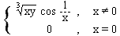
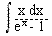
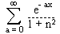

Analiza 2
I kolokvijum
1. a) Za funkciju ƒ(x,y) =  ispitati da li je:
1° ƒ Î C(R²),
2° ƒx' (0,0) = ƒy' (0,0)
= 0
3° ƒ diferencijabilna u tacki (0,0).
b) Naci lokalne ekstreme funkcije zadate sa x² + y² + z² - 2x - 2y - 4z -10 = 0.
2. Dokazati da je = p² / 6.
3. a) Neka je ƒ(x) =, x ³ 0. Dokazati da je:
1° ƒ Î C( [0, +¥)
)
2° ƒ Î (
(0, +¥) )
b) Razviti u stepeni red funkciju ƒ(x) = ln(1 + 27x²), odrediti poluprecnik konvergencije i ispitati konvergenciju u granicnim tackama.